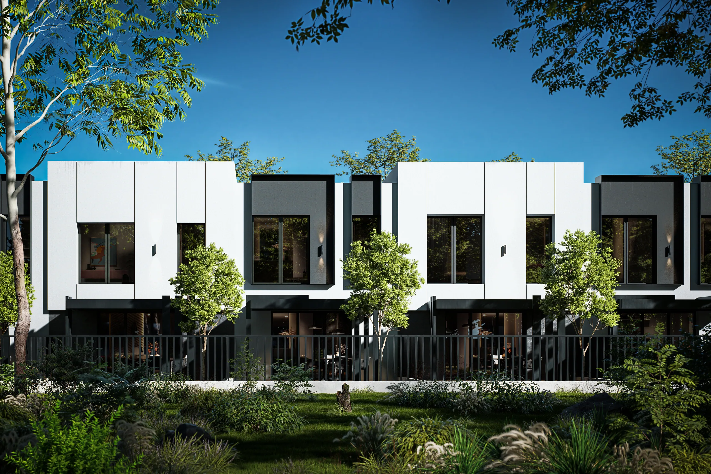
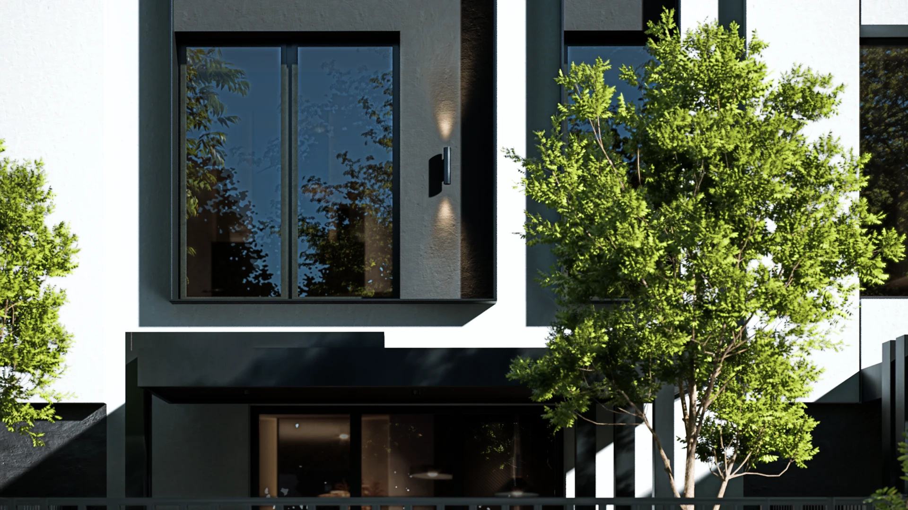

Формат · Таунхауси
82 м², які стоять на власній землі.
Дім і його двір, проміряні олівцем архітектора.
Виміри нижче
Свій двір, проміряний чесно.
1,5 сотки власної землі за кухнею, без сусідів згори.

Два поверхи на своїй землі.
82 м² всередині, і жодного метра над чужою головою.

Ряд один, місць шість.
Обери своє.
6 місць у ряду · одна мірка